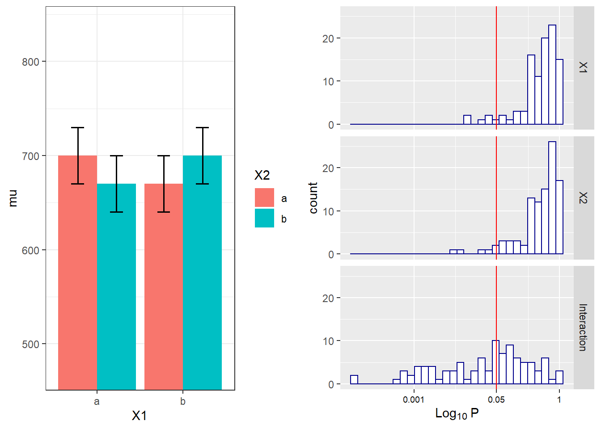

Chapter 5 Mixed ANOVA
5.1 Part 1
5.1.1 Two by two ANOVA, within-between design
We can simulate a Two-Way ANOVA with a specific alpha, sample size and effect size, to achieve a specified statistical power. We wil try to reproduce the power analysis by g*power for an F-test, ANOVA: Repeated measures, within-between interaction.

For the 2-way interaction, the result should be a power of 91.25% is we have a total samplesize of 46. Since we have 2 groups in the between factor that means the sample size per group is 2 (and both these groups collect 2 repeated measures).
mu <- c(-0.25, 0.25, 0.25,-0.25)
n <- 23
sd <- 1
r <- 0.5
string = "2w*2b"
alpha_level <- 0.05
labelnames = c("age", "old", "young", "color", "blue", "red")
design_result <- ANOVA_design(
design = string,
n = n,
mu = mu,
sd = sd,
r = r,
labelnames = labelnames
)
simulation_result <- ANOVA_power(design_result,
alpha_level = alpha_level,
nsims = nsims,
verbose = FALSE)
knitr::kable(simulation_result$main_results,
caption = "Simulated ANOVA Result")| power | effect_size | |
|---|---|---|
| anova_color | 4.97 | 0.0220039 |
| anova_age | 5.55 | 0.0228734 |
| anova_color:age | 91.35 | 0.2165834 |
exact_result <- ANOVA_exact(design_result,
alpha_level = alpha_level,
verbose = FALSE)
knitr::kable(exact_result$main_results,
caption = "Exact ANOVA Result")| power | partial_eta_squared | cohen_f | non_centrality | |
|---|---|---|---|---|
| color | 5.00 | 0.0000 | 0.0000 | 0.0 |
| age | 5.00 | 0.0000 | 0.0000 | 0.0 |
| color:age | 91.25 | 0.2072 | 0.5112 | 11.5 |
5.1.2 Two by two ANOVA, within-between design Variation 1
We can simulate the same two-way ANOVA increasing the correlation to 0.7.

mu <- c(-0.25, 0.25, 0.25, -0.25)
n <- 23
sd <- 1
r <- 0.7
string = "2w*2b"
alpha_level <- 0.05
labelnames = c("age", "old", "young", "color", "blue", "red")
design_result <- ANOVA_design(design = string,
n = n,
mu = mu,
sd = sd,
r = r,
labelnames = labelnames)
simulation_result <- ANOVA_power(design_result,
alpha_level = alpha_level,
nsims = nsims,
verbose = FALSE)
knitr::kable(simulation_result$main_results,
caption = "Simulated ANOVA Result")| power | effect_size | |
|---|---|---|
| anova_color | 4.80 | 0.0220148 |
| anova_age | 5.24 | 0.0224235 |
| anova_color:age | 99.03 | 0.3073261 |
exact_result <- ANOVA_exact(design_result,
alpha_level = alpha_level,
verbose = FALSE)
knitr::kable(exact_result$main_results,
caption = "Exact ANOVA Result")| power | partial_eta_squared | cohen_f | non_centrality | |
|---|---|---|---|---|
| color | 5.00 | 0.0000 | 0.00 | 0.0000 |
| age | 5.00 | 0.0000 | 0.00 | 0.0000 |
| color:age | 98.98 | 0.3034 | 0.66 | 19.1667 |
5.2 Part 2
5.2.1 Two by two ANOVA, within-within design
We can simulate a 2x2 ANOVA, both factors manipulated within participants, with a specific sample size and effect size, to achieve a desired statistical power.
As Potvin & Schutz (2000) explain, analytic procedures for a two-factor repeated measures ANOVA do not seem to exist. The main problem is quantifying the error variance (the denominator when calculating lambda or Cohen’s f). Simulation based aproaches provide a solution.
We can reproduce the simulation coded by Ben Amsel
knitr::opts_chunk$set(echo = TRUE, warning = FALSE, message = FALSE)
# define the parameters
# true effects (in this case, a double dissociation)
mu = c(700, 670, 670, 700)
sigma = 150 # population standard deviation
rho = 0.75 # correlation between repeated measures
nsubs = 25 # how many subjects?
nsims = nsims # how many simulation replicates?
# create 2 factors representing the 2 independent variables
cond = data.frame(X1 = rep(factor(letters[1:2]), nsubs * 2),
X2 = rep(factor(letters[1:2]), nsubs, each = 2))
# create a subjects factor
subject = factor(sort(rep(1:nsubs, 4)))
# combine above into the design matrix
dm = data.frame(subject, cond)Build Sigma: the population variance-covariance matrix
# create k x k matrix populated with sigma
sigma.mat <- rep(sigma, 4)
S <-
matrix(sigma.mat,
ncol = length(sigma.mat),
nrow = length(sigma.mat))
# compute covariance between measures
Sigma <- t(S) * S * rho
# put the variances on the diagonal
diag(Sigma) <- sigma^2 Run the simulation
# stack 'nsims' individual data frames into one large data frame
df = dm[rep(seq_len(nrow(dm)), nsims), ]
# add an index column to track the simulation run
df$simID = sort(rep(seq_len(nsims), nrow(dm)))
# sample the observed data from a multivariate normal distribution
# using MASS::mvrnorm with the parameters mu and Sigma created earlier
# and bind to the existing df
make.y = expression(as.vector(t(mvrnorm(nsubs, mu, Sigma))))
df$y = as.vector(replicate(nsims, eval(make.y)))
# use do(), the general purpose complement to the specialized data
# manipulation functions available in dplyr, to run the ANOVA on
# each section of the grouped data frame created by group_by
mods <- df %>%
group_by(simID) %>%
do(model = aov(y ~ X1 * X2 + Error(subject / (X1 * X2)),
qr = FALSE, data = .))
# extract p-values for each effect and store in a data frame
p = data.frame(
mods %>% do(as.data.frame(tidy(.$model[[3]])$p.value[1])),
mods %>% do(as.data.frame(tidy(.$model[[4]])$p.value[1])),
mods %>% do(as.data.frame(tidy(.$model[[5]])$p.value[1])))
colnames(p) = c('X1','X2','Interaction')The empirical power is easy to compute, it’s just the proportion of simulation runs where p <. 05.
power.res = apply(as.matrix(p), 2,
function(x) round(mean(ifelse(x < .05, 1, 0) * 100),2))
power.res## X1 X2 Interaction
## 5.30 5.03 48.17Visualize the distributions of p-values
# plot the known effects
means = data.frame(cond[1:4,], mu, SE = sigma / sqrt(nsubs))
plt1 = ggplot(means, aes(y = mu, x = X1, fill = X2)) +
geom_bar(position = position_dodge(), stat = "identity") +
geom_errorbar(
aes(ymin = mu - SE, ymax = mu + SE),
position = position_dodge(width = 0.9),
size = .6,
width = .3
) +
coord_cartesian(ylim = c((.7 * min(mu)), 1.2 * max(mu))) +
theme_bw()
# melt the data into a ggplot friendly 'long' format
plotData <- melt(p, value.name = 'p')
# plot each of the p-value distributions on a log scale
options(scipen = 999) # 'turn off' scientific notation
plt2 = ggplot(plotData, aes(x = p)) +
scale_x_log10(breaks = c(1, 0.05, 0.001),
labels = c(1, 0.05, 0.001)) +
geom_histogram(colour = "darkblue", fill = "white") +
geom_vline(xintercept = 0.05, colour = 'red') +
facet_grid(variable ~ .) +
labs(x = expression(Log[10] ~ P)) +
theme(axis.text.x = element_text(color = 'black', size = 7))
# arrange plots side by side and print
grid.arrange(plt1, plt2, nrow = 1)
We can reproduce this simulation:
mu = c(700, 670, 670, 700) # true effects (in this case, a double dissociation)
sigma = 150 # population standard deviation
n <- 25
sd <- 150
r <- 0.75
string = "2w*2w"
alpha_level <- 0.05
labelnames = c("age", "old", "young", "color", "blue", "red")
design_result <- ANOVA_design(design = string,
n = n,
mu = mu,
sd = sd,
r = r,
labelnames = labelnames)
simulation_result <- ANOVA_power(design_result,
alpha_level = alpha_level,
nsims = nsims,
verbose = FALSE)
knitr::kable(simulation_result$main_results,
caption = "Simulated ANOVA Result")| power | effect_size | |
|---|---|---|
| anova_age | 4.93 | 0.0389944 |
| anova_color | 5.12 | 0.0400953 |
| anova_age:color | 48.00 | 0.1641848 |
exact_result <- ANOVA_exact(design_result,
alpha_level = alpha_level,
verbose = FALSE)
knitr::kable(exact_result$main_results,
caption = "Exact ANOVA Result")| power | partial_eta_squared | cohen_f | non_centrality | |
|---|---|---|---|---|
| age | 5.0 | 0.0000 | 0.0000 | 0 |
| color | 5.0 | 0.0000 | 0.0000 | 0 |
| age:color | 48.4 | 0.1429 | 0.4082 | 4 |
The simulations yield closely matching results.
5.2.2 Examine variation of means and correlation
# define the parameters
mu = c(700, 670, 690, 750) # true effects (in this case, a double dissociation)
sigma = 150 # population standard deviation
rho = 0.4 # correlation between repeated measures
nsubs = 25 # how many subjects?
nsims = nsims # how many simulation replicates?
# create 2 factors representing the 2 independent variables
cond = data.frame(X1 = rep(factor(letters[1:2]), nsubs * 2),
X2 = rep(factor(letters[1:2]), nsubs, each = 2))
# create a subjects factor
subject = factor(sort(rep(1:nsubs, 4)))
# combine above into the design matrix
dm = data.frame(subject, cond)Build Sigma: the population variance-covariance matrix
# create k x k matrix populated with sigma
sigma.mat <- rep(sigma, 4)
S <-
matrix(sigma.mat,
ncol = length(sigma.mat),
nrow = length(sigma.mat))
# compute covariance between measures
Sigma <- t(S) * S * rho
# put the variances on the diagonal
diag(Sigma) <- sigma ^ 2 Run the simulation
# stack 'nsims' individual data frames into one large data frame
df = dm[rep(seq_len(nrow(dm)), nsims), ]
# add an index column to track the simulation run
df$simID = sort(rep(seq_len(nsims), nrow(dm)))
# sample the observed data from a multivariate normal distribution
# using MASS::mvrnorm with the parameters mu and Sigma created earlier
# and bind to the existing df
make.y = expression(as.vector(t(mvrnorm(nsubs, mu, Sigma))))
df$y = as.vector(replicate(nsims, eval(make.y)))
# use do(), the general purpose complement to the specialized data
# manipulation functions available in dplyr, to run the ANOVA on
# each section of the grouped data frame created by group_by
mods <- df %>%
group_by(simID) %>%
do(model = aov(y ~ X1 * X2 + Error(subject / (X1 * X2)),
qr = FALSE, data = .))
# extract p-values for each effect and store in a data frame
p = data.frame(mods %>% do(as.data.frame(tidy(.$model[[3]])$p.value[1])),
mods %>% do(as.data.frame(tidy(.$model[[4]])$p.value[1])),
mods %>% do(as.data.frame(tidy(.$model[[5]])$p.value[1])))
colnames(p) = c('X1', 'X2', 'Interaction')The empirical power is easy to compute, it’s just the proportion of simulation runs where p <. 05.
power.res = apply(as.matrix(p), 2,
function(x) round(mean(ifelse(x < .05, 1, 0) * 100),2))
power.res## X1 X2 Interaction
## 9.68 30.59 45.49Visualize the distributions of p-values
means = data.frame(cond[1:4,], mu, SE = sigma / sqrt(nsubs))
plt1 = ggplot(means, aes(y = mu, x = X1, fill = X2)) +
geom_bar(position = position_dodge(), stat = "identity") +
geom_errorbar(
aes(ymin = mu - SE, ymax = mu + SE),
position = position_dodge(width = 0.9),
size = .6,
width = .3
) +
coord_cartesian(ylim = c((.7 * min(mu)), 1.2 * max(mu))) +
theme_bw()
# melt the data into a ggplot friendly 'long' format
plotData <- melt(p, value.name = 'p')
# plot each of the p-value distributions on a log scale
options(scipen = 999) # 'turn off' scientific notation
plt2 = ggplot(plotData, aes(x = p)) +
scale_x_log10(breaks = c(1, 0.05, 0.001),
labels = c(1, 0.05, 0.001)) +
geom_histogram(colour = "darkblue", fill = "white") +
geom_vline(xintercept = 0.05, colour = 'red') +
facet_grid(variable ~ .) +
labs(x = expression(Log[10] ~ P)) +
theme(axis.text.x = element_text(color = 'black', size = 7))
# arrange plots side by side and print
grid.arrange(plt1, plt2, nrow = 1)
We can reproduce this simulation:
mu = c(700, 670, 690, 750) # true effects (in this case, a double dissociation)
sigma = 150 # population standard deviation
n <- 25
sd <- 150
r <- 0.4
string = "2w*2w"
alpha_level <- 0.05
labelnames = c("age", "old", "young", "color", "blue", "red")
design_result <- ANOVA_design(design = string,
n = n,
mu = mu,
sd = sd,
r = r,
labelnames = labelnames)
simulation_result <- ANOVA_power(design_result,
alpha_level = 0.05,
nsims = nsims)## Power and Effect sizes for ANOVA tests
## power effect_size
## anova_age 28.97 0.11219
## anova_color 9.80 0.05523
## anova_age:color 46.68 0.15970
##
## Power and Effect sizes for contrasts
## power effect_size
## p_age_old_color_blue_age_old_color_red 14.10 -0.19111
## p_age_old_color_blue_age_young_color_blue 5.97 -0.06779
## p_age_old_color_blue_age_young_color_red 30.70 0.31123
## p_age_old_color_red_age_young_color_blue 8.60 0.12204
## p_age_old_color_red_age_young_color_red 64.16 0.50216
## p_age_young_color_blue_age_young_color_red 42.29 0.37933
##
## Within-Subject Factors Included: Check MANOVA Resultsexact_result <- ANOVA_exact(design_result, alpha_level = alpha_level)## Power and Effect sizes for ANOVA tests
## power partial_eta_squared cohen_f non_centrality
## age 30.40 0.0864 0.3074 2.2685
## color 9.51 0.0171 0.1318 0.4167
## age:color 45.98 0.1351 0.3953 3.7500
##
## Power and Effect sizes for contrasts
## power effect_size
## p_age_old_color_blue_age_old_color_red 14.16 -0.1826
## p_age_old_color_blue_age_young_color_blue 5.98 -0.0609
## p_age_old_color_blue_age_young_color_red 30.91 0.3043
## p_age_old_color_red_age_young_color_blue 9.00 0.1217
## p_age_old_color_red_age_young_color_red 64.66 0.4869
## p_age_young_color_blue_age_young_color_red 41.80 0.36515.3 Part 3
###Two by two ANOVA, within design
Potvin & Schutz (2000) simulate a wide range of repeated measure designs. The give an example of a 3x3 design, with the following correlation matrix:

Variances were set to 1 (so all covariance matrices in their simulations were identical). In this specific example, the white fields are related to the correlation for the A main effect (these cells have the same level for B, but different levels of A). The grey cells are related to the main effect of B (the cells have the same level of A, but different levels of B). Finally, the black cells are related to the AxB interaction (they have different levels of A and B). The diagonal (all 1) relate to cells with the same levels of A and B.
Potvin & Schulz (2000) examine power for 2x2 within ANOVA designs and develop approximations of the error variance. For a design with 2 within factors (A and B) these are:
For the main effect of A: \(\sigma _ { e } ^ { 2 } = \sigma ^ { 2 } ( 1 - \overline { \rho } _ { A } ) + \sigma ^ { 2 } ( q - 1 ) ( \overline { \rho } _ { B } - \overline { \rho } _ { AB } )\)
For the main effectof B: \(\sigma _ { e } ^ { 2 } = \sigma ^ { 2 } ( 1 - \overline { \rho } _ { B } ) + \sigma ^ { 2 } ( p - 1 ) ( \overline { \rho } _ { A } - \overline { \rho } _ { A B } )\)
For the interaction between A and B: \(\sigma _ { e } ^ { 2 } = \sigma ^ { 2 } ( 1 - \rho _ { \max } ) - \sigma ^ { 2 } ( \overline { \rho } _ { \min } - \overline { \rho } _ { AB } )\)
5.4 Simple example: 2x2 within design
It is difficult to just come up with a positive definite covariance matrix. The best way to achieve this is to get the correlations from a pilot study. Indeed, it should be rather difficult to know which correlations to fill in without some pilot data.
We try to get the formulas in Potvin and Schutz (2000) working. Below, I manage for the main effects, but not for the interaction.
mu = c(2,1,4,2)
n <- 20
sd <- 5
r <- c(
0.8, 0.4, 0.4,
0.4, 0.4,
0.8
)
string = "2w*2w"
alpha_level <- 0.05
labelnames = c("A", "a1", "a2", "B", "b1", "b2")
design_result <- ANOVA_design(design = string,
n = n,
mu = mu,
sd = sd,
r = r,
labelnames = labelnames)
simulation_result <- ANOVA_power(design_result,
alpha_level = alpha_level,
nsims = nsims,
verbose = FALSE)
knitr::kable(simulation_result$main_results,
caption = "Simulated ANOVA Result")| power | effect_size | |
|---|---|---|
| anova_A | 24.39 | 0.1213344 |
| anova_B | 81.74 | 0.3309514 |
| anova_A:B | 16.48 | 0.0929209 |
exact_result <- ANOVA_exact(design_result,
alpha_level = alpha_level,
verbose = FALSE)
knitr::kable(exact_result$main_results,
caption = "Exact ANOVA Result")| power | partial_eta_squared | cohen_f | non_centrality | |
|---|---|---|---|---|
| A | 24.71 | 0.0865 | 0.3078 | 1.8 |
| B | 81.21 | 0.3214 | 0.6882 | 9.0 |
| A:B | 15.81 | 0.0500 | 0.2294 | 1.0 |
We can try to use the formula in Potvin & Schutz (2000).
k <- 1 #one group (because all factors are within)
rho_A <- 0.5 #mean r for factor A
rho_B <- 0.8 #mean r for factor B
rho_AB <- 0.4 #mean r for factor AB
alpha <- 0.05
sigma <- sd
m_A <- 2 #levels factor A
variance_e_A <- sigma^2 * (1 - rho_A) + sigma^2 * (m_A - 1) * (rho_B - rho_AB)
#Variance A
variance_e_A## [1] 22.5m_B <- 2 #levels factor B
variance_e_B <- sigma^2 * (1 - rho_B) + sigma^2 * (m_B - 1) * (rho_A - rho_AB)
#Variance B
variance_e_B## [1] 7.5variance_e_AB <-
(sigma ^ 2 * (1 - max(rho_A, rho_B)) -
sigma ^ 2 * (min(rho_A, rho_B) - rho_AB))
#Variance AB
variance_e_AB## [1] 2.5#Create a mean matrix
mean_mat <- t(matrix(mu, nrow = m_B,ncol = m_A))
mean_mat## [,1] [,2]
## [1,] 2 1
## [2,] 4 2# Potving & Schutz, 2000, formula 2, p. 348
# For main effect A
lambda_A <-
n * m_A * sum((rowMeans(mean_mat) -
mean(rowMeans(mean_mat))) ^ 2) / variance_e_A
lambda_A## [1] 2#calculate degrees of freedom 1 - ignoring the * e sphericity correction
df1 <- (m_A - 1)
df2 <- (n - k) * (m_A - 1) #calculate degrees of freedom 2
F_critical <- qf(alpha, # critical F-vaue
df1,
df2,
lower.tail = FALSE)
pow_A <- pf(qf(alpha, #power
df1,
df2,
lower.tail = FALSE),
df1,
df2,
lambda_A,
lower.tail = FALSE)
lambda_B <-
n * m_B * sum((colMeans(mean_mat) -
mean(colMeans(mean_mat))) ^ 2) / variance_e_B
lambda_B## [1] 6df1 <- (m_B - 1) #calculate degrees of freedom 1
df2 <- (n - k) * (m_B - 1) #calculate degrees of freedom 2
F_critical <- qf(alpha, # critical F-vaue
df1,
df2,
lower.tail = FALSE)
pow_B <- pf(qf(alpha, #power
df1,
df2,
lower.tail = FALSE),
df1,
df2,
lambda_B,
lower.tail = FALSE)
pow_A## [1] 0.2691752pow_B## [1] 0.6422587We see the 26.9 and 64.2 correspond to the results of the simulation quite closely.
#This (or the variance calculation above) does not work.
lambda_AB <- n * sum((
mean_mat - rowMeans(mean_mat) - colMeans(mean_mat) + mean(mean_mat)
) ^ 2) / variance_e_AB
lambda_AB## [1] 38df1 <- (m_A - 1) * (m_B - 1) #calculate degrees of freedom 1
df2 <-
(n - k) * (m_A - 1) * (m_B - 1) #calculate degrees of freedom 2
F_critical <- qf(alpha, # critical F-vaue
df1,
df2,
lower.tail = FALSE)
pow <- pf(qf(alpha, #power
df1,
df2,
lower.tail = FALSE),
df1,
df2,
lambda_AB,
lower.tail = FALSE)
pow## [1] 0.9999458Maybe the simulation is not correct for the interaction, or the formula is not correctly programmed.